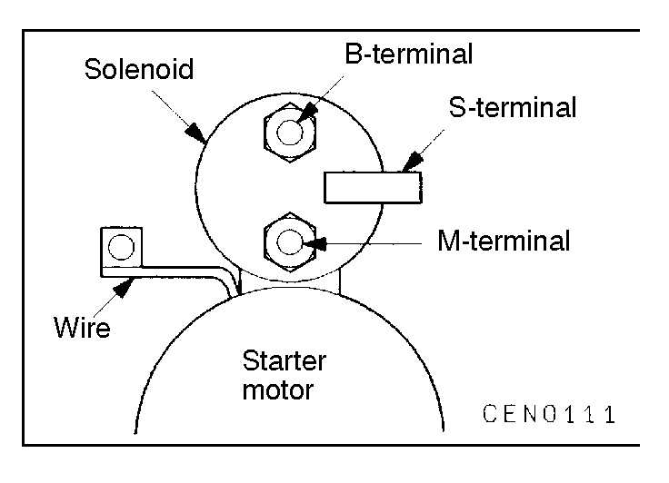
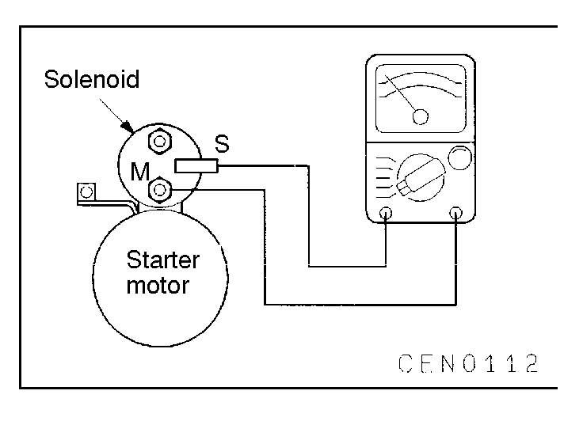
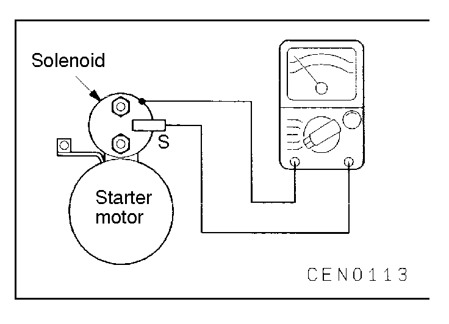
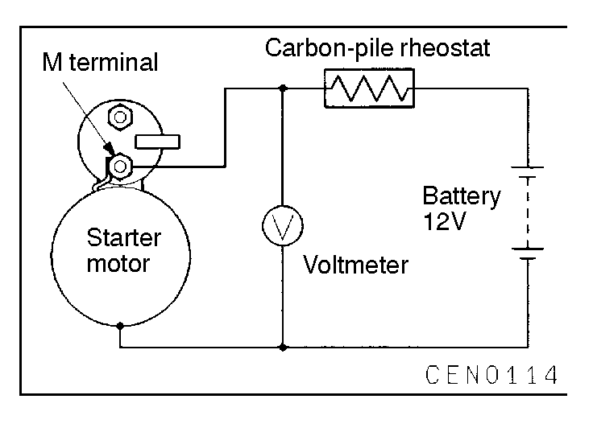

![[Previous]](https://mitsubishitechinfo.com/data/F24S/BUTTONS/fprevg.png)
![[Next]](https://mitsubishitechinfo.com/data/F24S/BUTTONS/fnextg.png)
   
INSPECTION
STARTER SOLENOID CONTINUITY CHECK
(1)Disconnect wire from M (motor) terminal.
(2)Check for continuity between S (solenoid) terminal and M (motor) terminal with a continuity tester. Continuity should be detected.
(3)Check for continuity between S terminal and solenoid housing.
Continuity should be detected. If continuity is detected, solenoid is good.
(4)If continuity is not detected in either (2) and (3) test, the solenoid has an open circuit and is defective.
Replace the starter assembly.
FREE RUNNING TEST
(1)Place the starter motor in a vise equipped with soft jaws and connect a fully-charged 12-volt battery as follows:
(2)Connect a carbon pile rheostat in series between the battery positive post and starter motor terminal.
(3)Connect a voltmeter (15-volt scale) across the starter motor.
(4)Rotate carbon pile to full-resistance position.
(5)Connect battery cable from battery negative post to starter motor body.
(6)Adjust the rheostat so that a voltmeter indicates approx. 11 V. If the starter motor turns smoothly, it is OK.